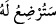
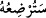
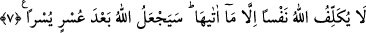

tamamlatmak isteyen (baba için) anneler çocuklarını iki tam yıl emzirirler.” (el-
Bakara, 2/233) âyet-i kerîmesine uygundur. Ancak “onun için” ifâdesi “baba için”
şeklinde anlaşılabileceği gibi, “çocuk için” şeklinde de anlaşılabilir. Nitekim Celaleyn
tefsiri ile Kâşifî’nin tefsirinde ve buna benzer tefsirlerde bu şekilde anlaşılmıştır. Bu
takdirde zâhir olanı “
/seturdiu lehû” şeklinde değil de, “
/seturdiuhû”
şeklinde söylenmek gerekirdi.
Eğer anlaşamazsanız bu takdirde annenin dışında o çocuğu emzirecek bir sütanne
bulunur, bulunmaz değildir.
Bu âyet-i kerimede zorluk çıkarmasından dolayı anneye bir azar vardır. Tıpkı bu,
senin, birinden ihtiyacının karşılanmasını istediğinde onun, bunu karşılamada gevşek
davrandığında ona: “Bu ihtiyacımı senden birisi karşılayacak” demen gibi olur ki, sanki
ona zımnen “eğer sen bu ihtiyacımı karşılamamaya devam edecek olursan kınanmış bir
kişi olursun” demiş olursun.
Sa’dî Müftî der ki, âyet-i kerîme aynı zamanda babaya da bir çıkışma ifâde
etmektedir. Zira babaya hitap edilecek yerde cevabın verilmeyişi ve bunun yanında anne
ücret noktasında zora sokulup bu nedenle çocuğu emzirmekten kaçındığında bir başka
kadının emzirmesinin kaçınılmaz olduğuna işâret edilmektedir. Bu başka kadın da büyük
bir ihtimalle ücret isteyecektir. Hâlbuki anne çocuğuna daha şefkatli ve daha
merhametlidir. Dolayısıyla çocuğuna başka kadınlardan daha yakındır ve daha uygundur.
İşte bu zikrettiklerimizle şart ile cevap arasındaki ilişkinin mükemmelliği ortaya çıkmış
oluyor.
7. İmkânı geniş olan, nafakayı imkânlarına göre versin; rızkı daralmış bulunan da
Allah’ın kendisine verdiği kadarından nafaka ödesin. Allah hiç kimseyi verdiği
imkândan fazlasıyla yükümlü kılmaz. Allah, bir güçlükten sonra bir kolaylık
yaratacaktır.
“İmkânı geniş olan, nafakayı imkânlarına göre versin.” Varlıklı ve zengin olan
çocuk sâhibi kendi zenginliği nispetinde, yâni zenginliği ölçüsünde boşandığı süt veren
kadına nafakasını versin.
Âyet metnindeki “min” kelimesi “li yunfik” fiiline bağlıdır. Buna göre âyetin mânâsı
“nafakayı imkânlarına göre versin” demek olur. “Rızkı daralmış bulunan da” Rızkı
daralıp da sadece karnını doyuracak olduğu azık miktarına inmiş olan kimse de...
denmiş olmaktadır.
Boynu kısa olan kimseye “el-akder” denilmesi kelimenin yapısındaki bu mânâdan